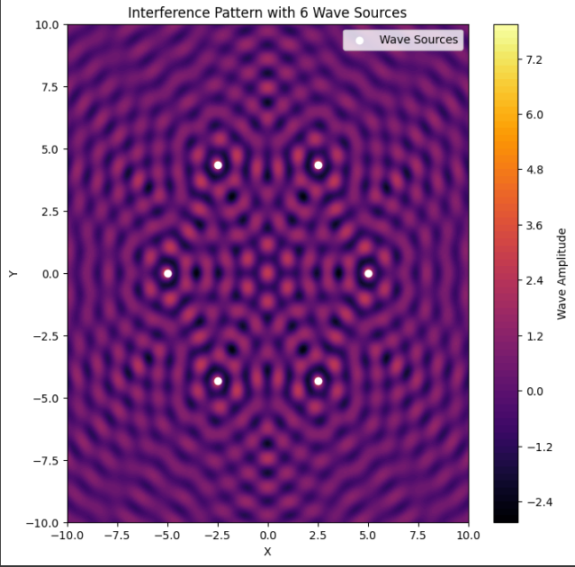

Problem 1
Interference Patterns on a Water Surface
Motivation
Interference occurs when waves from different sources overlap, creating new patterns. On a water surface, this can be observed when ripples from different points meet, forming distinctive interference patterns. These patterns help us understand wave behavior and the relationship between wave phase and multiple sources.
Task
A circular wave on the water surface, emanating from a point source located at \((x_0, y_0)\), can be described by the equation:
where: - $ \eta(x, y, t) $ is the displacement at $ (x, y) $ and time $ t $. - $ A $ is the amplitude. - $ k = \frac{2\pi}{\lambda} $ is the wave number. - $ \omega = 2\pi f $ is the angular frequency. - $ r = \sqrt{(x - x_0)^2 + (y - y_0)^2} $ is the distance from the source. - $ \phi $ is the initial phase.
Problem Statement
Analyze the interference patterns formed on the water surface due to the superposition of waves emitted from sources placed at the vertices of a regular polygon.
Steps to Follow
- Select a Regular Polygon: Choose a regular polygon (triangle, square, pentagon, etc.).
- Position the Sources: Place wave sources at the vertices.
- Wave Equations: Define the wave equation for each source.
- Superposition of Waves: Sum the wave displacements at each point:
$$ \eta_{sum}(x, y, t) = \sum_{i=1}^{N} \eta_i(x, y, t) $$
- Analyze Interference Patterns: Identify constructive and destructive interference regions.
- Visualization: Use Python and Matplotlib to graphically illustrate the patterns.
Considerations
- Assume all sources emit waves with the same $ A, \lambda, $ and $ f $.
- The waves are coherent with a constant phase difference.
- Use Python for simulations and visualizations.
Deliverables
- A Markdown document with detailed theoretical explanations and equations.
- A Python script implementing the simulation.
- Graphical representations showing constructive and destructive interference regions.
Python Code Implementation

import numpy as np
import matplotlib.pyplot as plt
# Define parameters
A = 1 # Amplitude
wavelength = 1 # Wavelength
k = 2 * np.pi / wavelength # Wave number
f = 1 # Frequency
omega = 2 * np.pi * f # Angular frequency
phi = 0 # Initial phase
def wave(x, y, x0, y0, t):
r = np.sqrt((x - x0)**2 + (y - y0)**2)
return (A / np.sqrt(r + 1e-6)) * np.cos(k * r - omega * t + phi)
# Define polygon sources
N = 4 # Number of sources (square)
radius = 5 # Radius of the polygon
angles = np.linspace(0, 2 * np.pi, N, endpoint=False)
source_positions = [(radius * np.cos(a), radius * np.sin(a)) for a in angles]
# Grid setup
x_vals = np.linspace(-10, 10, 200)
y_vals = np.linspace(-10, 10, 200)
x, y = np.meshgrid(x_vals, y_vals)
def total_wave(x, y, t):
sum_wave = np.zeros_like(x)
for x0, y0 in source_positions:
sum_wave += wave(x, y, x0, y0, t)
return sum_wave
# Plot result
t = 0
plt.figure(figsize=(8, 8))
plt.contourf(x, y, total_wave(x, y, t), levels=100, cmap='inferno')
plt.colorbar(label='Wave Amplitude')
plt.scatter(*zip(*source_positions), color='white', marker='o', label='Wave Sources')
plt.legend()
plt.title('Interference Pattern from a Square Wave Source')
plt.xlabel('X')
plt.ylabel('Y')
plt.show()
This script simulates interference patterns for a square wave source. Modify \(N\) and \(radius\) to explore different polygons.
Conclusion
This project provides insight into wave interference by simulating patterns from multiple sources. By visualizing the wave superposition, we can better understand constructive and destructive interference effects.